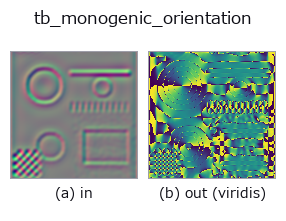

typed op• Data kinds: qimage → image
• Call: fullseye.apply(img, "tb_monogenic_orientation", a=0.5, b=0.5) (2-D model = एक image + दो scalar knobs a,b∈[0,1])

*Figure synthetic 128×128 input पर सच में चलाकर मिला output है। बाईं ओर input, दाईं ओर output। Point clouds ऊपर से देखे गए scatter के रूप में (brightness = z), 1-D series line के रूप में, volumes z दिशा में maximum-intensity projection के रूप में, videos बीच के frame के रूप में, complex images amplitude के रूप में, और जो return values चित्र नहीं बन सकते वे स्वयं values के रूप में दिखाए जाते हैं।*
*Output viridis जैसे pseudo-colour में है (गहरा बैंगनी = कम, पीला = अधिक), ताकि distance, phase, orientation, depth जैसे "मात्राओं के field" पढ़े जा सकें।*
*Knob a output नहीं बदलता (मापा गया: 0.1 / 0.5 / 0.9 पर एक जैसा)।*
*Knob b output नहीं बदलता (मापा गया: 0.1 / 0.5 / 0.9 पर एक जैसा)।*
Stages (पहले आने वाले ops → यह op, बाएँ से क्रम में):
▸ tb_monogenic_orientation: stages का figure (docs site)
दूसरी images पर भी (synthetic scene / photo / coins। ऊपर की row में inputs, नीचे की row में उनके outputs। Knobs default पर):
▸ tb_monogenic_orientation: दूसरी images पर output (docs site)
monogenic signal का local orientation atan2(R2, R1)। → (H, W)।
> नीचे का विस्तृत विवरण मूल text में है — सारांश और headings का अनुवाद हो चुका है।
Radians in [0, pi): an orientation is defined modulo pi (a grating at 10 degrees and one at 190 degrees are the same grating), and the value is folded into that range rather than left in (-pi, pi] where the same structure would read as two different numbers on either side of a contrast reversal. display=True maps it to [0, 1].
Continuous, not quantised — the angle is read directly from two filters, for any angle, where a steerable bank with K orientations interpolates between its K. Measured against eight grid-exact grating orientations the error is at most 3.6e-15 rad, including the obliques. (Whether that buys anything downstream is a separate question, and the measured answer is mostly *no* — see riesz_displacement.)
Where it is undefined, and the mask is not the one you expect. The orientation dies where the *Riesz vector* dies, which is at every even-symmetric point — local phase 0 or pi, the crest of a bright or dark line — and the amplitude is at full strength there. Measured on a 45-degree grating, the worst orientation error over the whole frame is 0.2764 rad, at a pixel where |R| = 6.8e-16 and monogenic_amplitude reads 1.0000. So masking on the amplitude does not protect you; mask on hypot(q[..., 1], q[..., 2]), the Riesz magnitude. With that mask the error over the same eight orientations is at most 3.6e-15 rad.
Where the Riesz vector is exactly zero, atan2(0, 0) = 0 is returned — a *value*, not a measurement.
Raises ValueError: the input is not a valid quaternion field, or its k component is non-zero; *display* is not a bool.
Typed bridge of the quat op monogenic_orientation into the 2-D evolution registry: the same implementation, called under the op(v, a, b) convention. This op has no tunable parameter; a and b are unused.
• Sample data catalog (DL URL / license) — 2-D के लिए skimage.data (BSD/public) + synthetic, 3-D के लिए real data sources (Stanford/PDS आदि) के DL URL।
• Operators का स्रोत और संदर्भ — इस op family के मूल research/methods के स्रोत।
नीचे का program सच में चलता है, यह जाँचा गया है (figure वाला ही input)। Studio की help में यह block buttons बन जाता है, जिनसे इसे वहीं load करके चलाया जा सकता है।
img_to_monogenic 0.50 0.50 tb_monogenic_orientation 0.50 0.50
▸ यह pipeline load करें · Load करके चलाएँ
नीचे के उदाहरण मूल ledger op monogenic_orientation को call करते हैं। यह bridge op वही implementation है, बस fn(v, a, b) convention के अनुसार ढाला गया है, इसलिए व्यवहार वैसा ही लागू होता है (केवल call का रूप अलग है)।
• quaternion_monogenic — py -3.11 examples/quaternion_monogenic.py
image को input के रूप में लेते हैं)identity · gaussian · mean_box · bilateral · unsharp · median · min_filter · max_filter
typed)tb_points_to_voxel · tb_estimate_point_normals · tb_iss_keypoints · tb_project_points · tb_render_point_depth · tb_statistical_outlier_removal · tb_radius_outlier_removal · tb_voxel_grid_downsample
*Provenance: ops.py — 2D operator registry. यह per-op note tools/opdocs.py md से अपने-आप generate होता है (हाथ से edit न करें)।*
© 2026 Kazufumi Furuse — Fullseye operator documentation. Licensed under Apache-2.0.